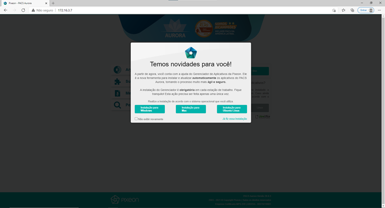
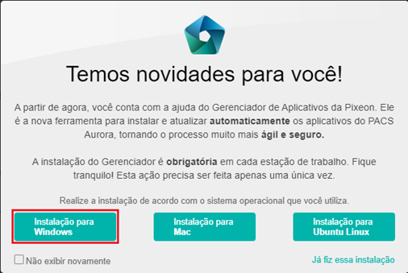
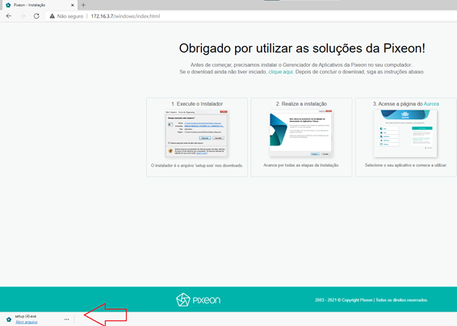
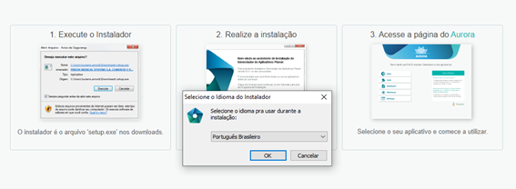
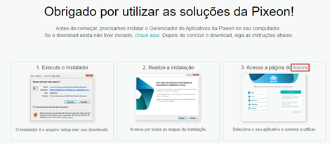
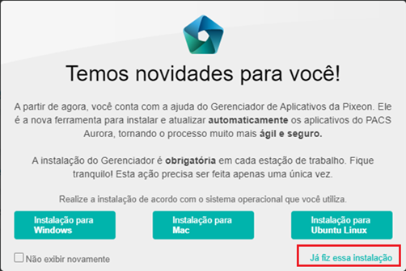
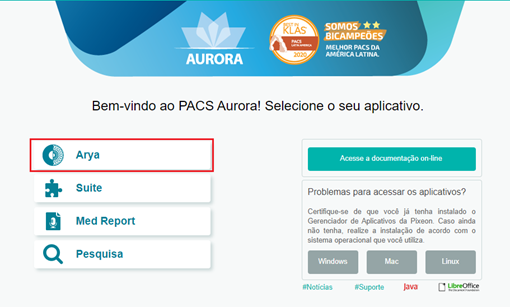

Tutorial de instalação Arya
Para realizar a instalação do Arya acesse o endereço http://172.16.3.80:8080/ no seu navegador.
Será aberta esta página:

Para realizar a instalação do Arya acesse o endereço "172.16.3.7" no seu navegador.
Clique na opção "Instalação para Windows"

Será feito o download do arquivo.

Clique no arquivo para instalá-lo. Basta aceitar as opções "OK", "Instalar" e "Concluir".

Após isso, clique no botão "Aurora" no navegador.

Selecione a opção "Já fiz essa instalação".

Após isso, clique em "ARYA".
